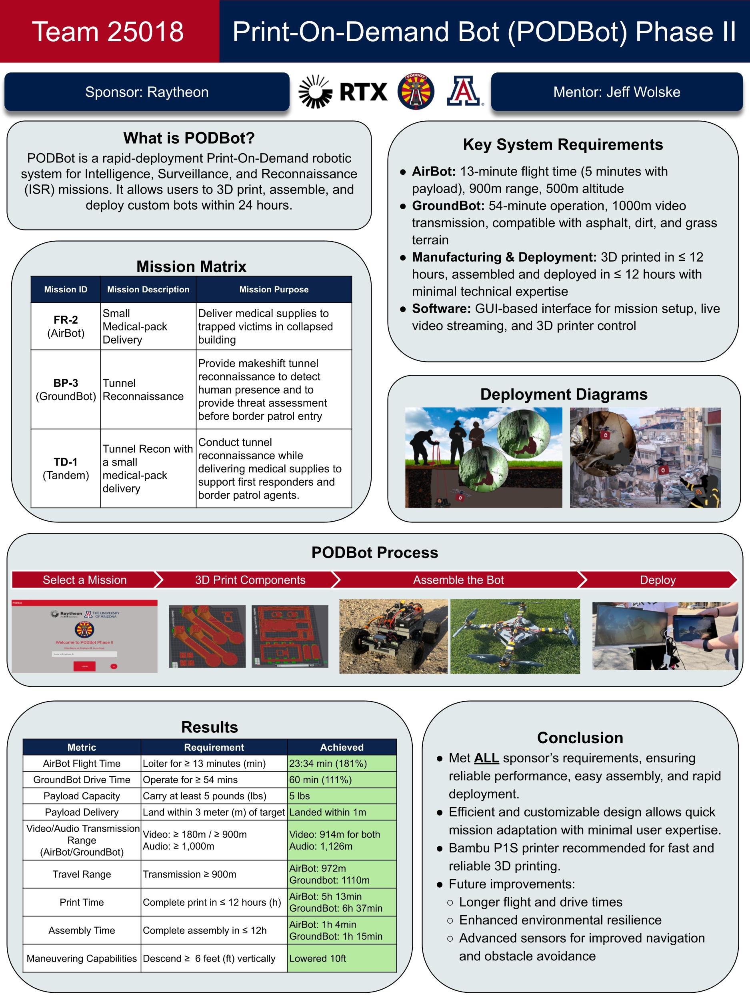
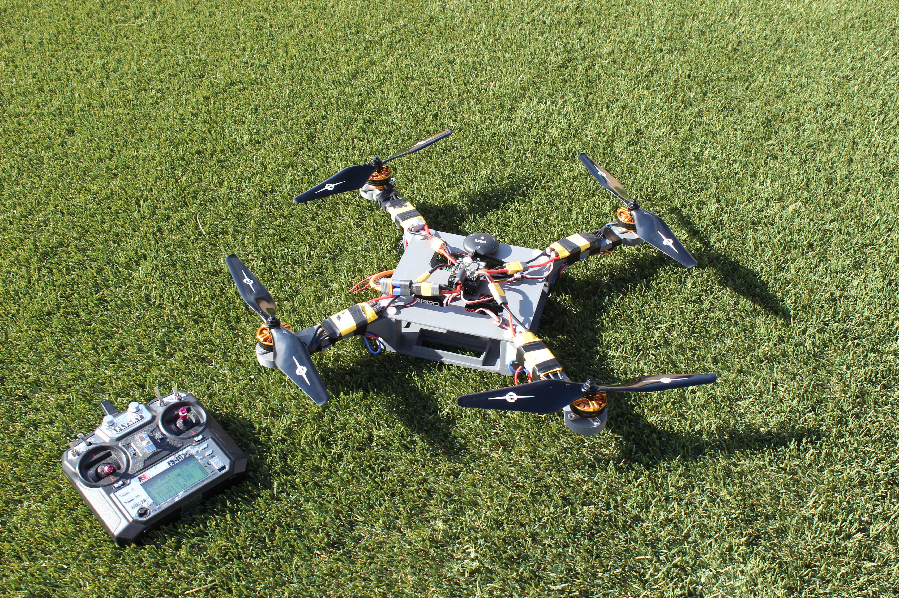
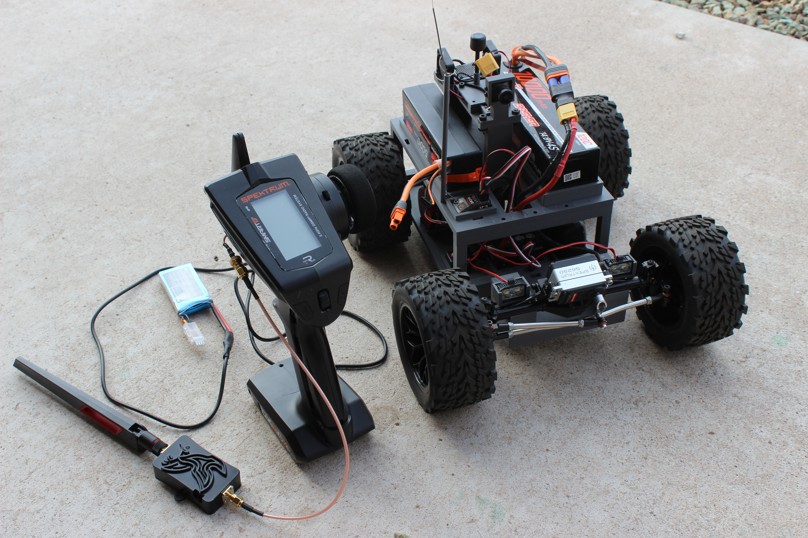
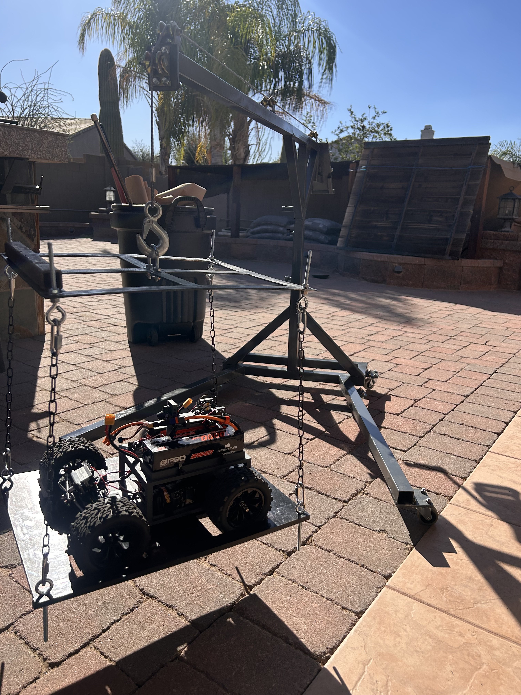
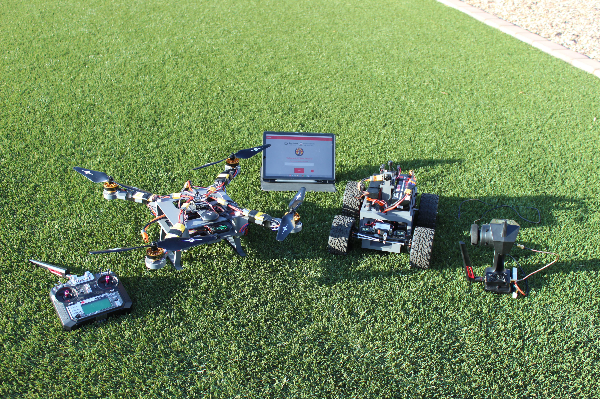

Functionalities and Results Overview
PODBot is a modular, 3D-printable system enabling rapid deployment for ISR operations. Below you can explore interactive diagrams of each subsystem, review key metrics, and examine mission-specific capabilities.
Interactive Poster Overview

System Performance Results
| Metric | Requirement | Achieved |
|---|---|---|
| AirBot Flight Time | ≥13 min (no payload) | 23:34 min |
| GroundBot Drive Time | ≥54 min | 60 min |
| Payload Capacity | 5 lbs | 5 lbs |
| Payload Delivery Accuracy | ≤3 m from target | 1 m |
| Video Transmission Range | AirBot: ≥180m GroundBot: ≥900m | 914m for both |
| Audio Range | ≥1000m | 1126m |
| Print Time | ≤12 hours | AirBot: 5h 13m GroundBot: 6h 37m |
| Assembly Time | ≤12 hours | AirBot: 1h 4m GroundBot: 1h 15m |
| Maneuvering Capability | Descend ≥6ft vertically | Lowered 10ft |
Meet the Systems
Each PODBot unit was engineered with specific capabilities in mind. Explore what makes each bot unique.

AirBot: Capable of flying over 900 meters and delivering payloads within 1 meter of a target. Designed for vertical lift into collapsed structures, AirBot integrates high-efficiency thrust, long-range audio/video transmission, and rapid 3D-printed structural components.

GroundBot: Equipped for asphalt, dirt, and grass terrain, GroundBot uses high-torque motors and 3D-printed gearing for stable maneuvering. It can operate for over an hour and deliver live HD video across 1100m of terrain.

Lowering Platform: Custom-designed to enable safe deployment into vertical shafts or tunnels. The system supports remote-controlled descent over 10 feet and ensures the GroundBot can enter confined environments without impact or instability.

Tandem Operation: In the TD-1 mission, AirBot and GroundBot work together, providing real-time video from both air and ground perspectives—ideal for rescue and reconnaissance in dynamic, high-risk environments.